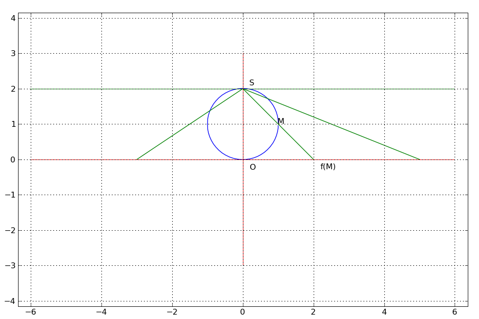

Il est possible de réaliser une d'un cercle privé d'un point sur ℝ. La figure ci-dessous illustre parfaitement ce fait. l'application M → f(M) est une bijection du cercle privé du point S sur ℝ. On ajoute alors à ℝ un point ∞ correspondant à S . ℝ se trouve alors 'plongé' dans un ensemble fermé borné ℝ∪{∞}. Cette construction est généralisable. Le plan est en correspondance avec une sphère privée d'un point ( sphère de Riemann ). Ce procédé que l'on peut étendre à de nombreux espaces s'appelle le procédé d' Alexandroff.
It is possible to build a of a circle deprived of a point on ℝ. The figure below illustrates perfectly this fact. the map M → f(M) is a bijection of the circle deprived of point S on ℝ. We then add to ℝ a point ∞ corresponding to S . ℝ is then 'immersed' in a set closed bounded ℝ∪{∞}. This build is generalizable. The plan is in correspondence with a sphere deprived from a point ( Riemann sphere ). This process, which can be extended to many spaces is called the process of Alexandroff .

Une autre façon de faire consiste à partir d'une bijection de ℝ sur un intervalle borné ouvert, par exemple ici ]-1, +1[ avec la fonction x → x/(1-|x|). On ajoute alors deux points. Un point + ∞ et un point - ∞ . Le résultat ℝ∪{- ∞,+ ∞} appelé la 'droite réelle achevée', est en bijection avec le compact [-1, +1]. cette construction n'est pas généralisable, elle est liée au caractère 'linéaire' de ℝ qu'on ne retrouve pas forcément dans d'autres
Another way to do it is from a bijection of ℝ on an open bounded interval, by example here ]-1, +1[ with the function x → x/(1-|x|). We then add two points. A point + ∞ and a point- ∞. The result ℝ∪{- ∞,+ ∞} called the 'completed real line ' , is in bijection with the compact [-1, +1]. this build is not generalizable, it is linked to the 'linear' character of ℝ which is not necessarily found in others